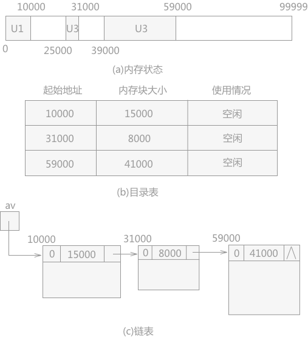

数据结构之动态内存管理机制
通过前面的学习，介绍很多具体的数据结构的存储以及遍历的方式，过程中只是很表面地介绍了数据的存储，而没有涉及到更底层的有关的存储空间的分配与回收，从本节开始将做更深入地介绍。
整个内存区就会分割成两个大部分：低地址区域会产生很多占用块；高地址区域还是空闲块。如图 1 所示：
图 1 动态分配过程中的内存状态
但是当某些用户运行结束，所占用的内存区域就变成了空闲块，如图 2 所示：
图 2 动态分配过程中的内存变化
此时，就形成了占用块和空闲块犬牙交错的状态。当后续用户请求分配内存时，系统有两种分配方式：
链表：表中每个结点代表一个空闲块，每个结点中需要记录空闲块的使用情况、大小和连接下一个空闲块的指针域。
系统在不同的环境中运行，根据用户申请空间的不同，存储空闲块的可利用空间表有以下不同的结构：
以上三种方法各有所长：
同时，三种方法中，最佳拟合法相比于其它两种方式，无论是分配过程还是回收过程，都需要遍历链表，所有最费时间。
但是并不是说整个内存空间就不够用户使用。在这种情况下，就需要系统在回收的过程考虑将地址相邻的空闲块合并。
本章重点解决的问题是：在使用早期的计算机上编写程序时，有关数据存储在什么位置等这样的问题都是需要程序员自己来给数据分配内存。而现在的高级语言，大大的减少了程序员的工作，不需要直接和存储空间打交道，程序在编译时由编译程序去合理地分配空间。
- 对于用户向系统提出的申请空间的请求，系统如何分配内存？
- 当用户不在使用之前申请的内存空间后，系统又如何回收？
这里的用户，不是普通意义上的用户，可能是一个普通的变量，一个应用程序，一个命令等等。只要是向系统发出内存申请的，都可以称之为用户。
占用块和空闲块
对于计算机中的内存来说，称已经分配给用户的的内存区统称为“占用块”；还未分配出去的内存区统称为“空闲块”或者“可利用空间块”。系统的内存管理
对于初始状态下的内存来说，整个空间都是一个空闲块（在编译程序中称为“堆”）。但是随着不同的用户不断地提出存储请求，系统依次分配。整个内存区就会分割成两个大部分：低地址区域会产生很多占用块；高地址区域还是空闲块。如图 1 所示：
图 1 动态分配过程中的内存状态
但是当某些用户运行结束，所占用的内存区域就变成了空闲块，如图 2 所示：
图 2 动态分配过程中的内存变化
此时，就形成了占用块和空闲块犬牙交错的状态。当后续用户请求分配内存时，系统有两种分配方式：
- 系统继续利用高地址区域的连续空闲块分配给用户，不去理会之前分配给用户的内存区域的状态。直到分配无法进行，也就是高地址的空闲块不能满足用户的需求时，系统才会去回收之前的空闲块，重新组织继续分配；
- 当用户运行一结束，系统马上将其所占空间进行回收。当有新的用户请求分配内存时，系统遍历所有的空闲块，从中找出一个合适的空闲块分配给用户。
合适的空闲块指的是能够满足用户要求的空闲块，具体的查找方式有多种，后续会介绍。
可利用空间表
当采用第 2 种方式时，系统需要建立一张记录所有空闲块信息的表。表的形式有两种：目录表和链表。各自的结构如图 3 所示：

图 3 目录表和链表
目录表：表中每一行代表一个空闲块，由三部分组成：图 3 目录表和链表
- 初始地址：记录每个空闲块的起始地址。
- 空闲块大小：记录每个空闲块的内存大小。
- 使用情况：记录每个空闲块是否存储被占用的状态。
链表：表中每个结点代表一个空闲块，每个结点中需要记录空闲块的使用情况、大小和连接下一个空闲块的指针域。
由于链表中有指针的存在，所以结点中不需要记录各内存块的起始地址。
系统在不同的环境中运行，根据用户申请空间的不同，存储空闲块的可利用空间表有以下不同的结构：
- 如果每次用户请求的存储空间大小相同，对于此类系统中的内存来说，在用户运行初期就将整个内存存储块按照所需大小进行分割，然后通过链表链接。当用户申请空间时，从链表中摘除一个结点归其使用；用完后再链接到可利用空间表上。
- 每次如果用户申请的都是若干种大小规格的存储空间，针对这种情况可以建立若干个可利用空间表，每一个链表中的结点大小相同。当用户申请某一规格大小的存储空间时，就从对应的链表中摘除一个结点供其使用；用完后链接到相同规格大小的链表中。
- 用户申请的内存的大小不固定，所以造成系统分配的内存块的大小也不确定，回收时，链接到可利用空间表中每个结点的大小也各不一样。
第 2 种情况下容易面临的问题是：如果同用户申请空间大小相同的链表中没有结点时，就需要找结点更大的链表，从中取出一个结点，一部分给用户使用，剩余部分插入到相应大小的链表中；回收时，将释放的空闲块插入到大小相同的链表中去。如果没有比用户申请的内存空间相等甚至更大的结点时，就需要系统重新组织一些小的连续空间，然后给用户使用。
分配存储空间的方式
通常情况下系统中的可利用空间表是第 3 种情况。如图 3(C) 所示。由于链表中各结点的大小不一，在用户申请内存空间时，就需要从可利用空间表中找出一个合适的结点，有三种查找的方法：- 首次拟合法：在可利用空间表中从头开始依次遍历，将找到的第一个内存不小于用户申请空间的结点分配给用户，剩余空间仍留在链表中；回收时只要将释放的空闲块插入在链表的表头即可。
- 最佳拟合法：和首次拟合法不同，最佳拟合法是选择一块内存空间不小于用户申请空间，但是却最接近的一个结点分配给用户。为了实现这个方法，首先要将链表中的各个结点按照存储空间的大小进行从小到大排序，由此，在遍历的过程中只需要找到第一块大于用户申请空间的结点即可进行分配；用户运行完成后，需要将空闲块根据其自身的大小插入到链表的相应位置。
- 最差拟合法：和最佳拟合法正好相反，该方法是在不小于用户申请空间的所有结点中，筛选出存储空间最大的结点，从该结点的内存空间中提取出相应的空间给用户使用。为了实现这一方法，可以在开始前先将可利用空间表中的结点按照存储空间大小从大到小进行排序，第一个结点自然就是最大的结点。回收空间时，同样将释放的空闲块插入到相应的位置上。
以上三种方法各有所长：
- 最佳拟合法由于每次分配相差不大的结点给用户使用，所以会生成很多存储空间特别小的结点，以至于根本无法使用，使用过程中，链表中的结点存储大小发生两极分化，大的很大，小的很小。该方法适用于申请内存大小范围较广的系统
- 最差拟合法，由于每次都是从存储空间最大的结点中分配给用户空间，所以链表中的结点大小不会起伏太大。依次适用于申请分配内存空间较窄的系统。
- 首次拟合法每次都是随机分配。在不清楚用户申请空间大小的情况下，使用该方法分配空间。
同时，三种方法中，最佳拟合法相比于其它两种方式，无论是分配过程还是回收过程，都需要遍历链表，所有最费时间。
空间分配与回收过程产生的问题
无论使用以上三种分配方式中的哪一种，最终内存空间都会成为一个一个特别小的内存空间，对于用户申请的空间的需求，单独拿出任何一个结点都不能够满足。但是并不是说整个内存空间就不够用户使用。在这种情况下，就需要系统在回收的过程考虑将地址相邻的空闲块合并。
合并的具体方法会在后面章节详细介绍。
关注公众号「站长严长生」，在手机上阅读所有教程，随时随地都能学习。内含一款搜索神器，免费下载全网书籍和视频。

微信扫码关注公众号